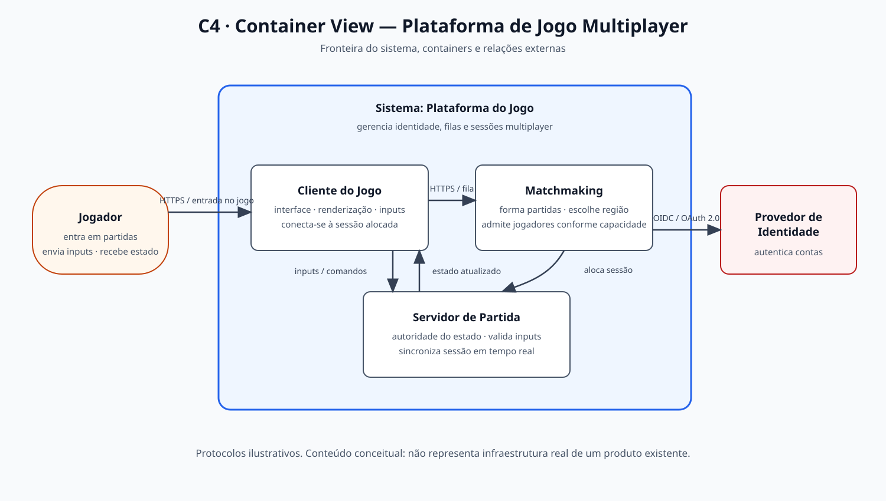

Arquitetura de Software · Semana 03
Defender decisões — com evidências e trade-offs
E-commerce · App bancário · Jogo multiplayer
RNFs ISO/IEC 25010 ADRs C4
01 · Requisitos antes da solução
Prioridades de qualidade diferem por produto
E-commerce
P0 Escala elástica e disponibilidade do fluxo essencial.
P1 Tolerar falhas parciais; integridade de pagamento/estoque.
Performance efficiencyReliabilityApp bancário
P0 Segurança, integridade, autorização e operações ACID.
P1 Disponibilidade e recuperação sem duplicidade.
SecurityReliabilityJogo multiplayer
P0 Baixa latência e sincronização de estado validado.
P1 Escala de sessões e tolerância a falhas.
Performance efficiencyReliabilityISO/IEC 25010: disponibilidade é subcaracterística de confiabilidade; latência se relaciona a eficiência de desempenho; segurança inclui confidencialidade, integridade e autenticidade. Metas numéricas: a definir.
02 · ADR-001 · E-commerce
Microsserviços por domínio + eventos seletivos
Decisão aceita
- Separar Catálogo, Pedidos, Pagamentos e Estoque.
- Eventos para etapas desacopláveis; APIs para respostas imediatas.
- Consistência eventual só onde o negócio tolera atraso.
Trade-off sem “almoço grátis”
- Ganho: escalar serviços conforme perfil de carga e evoluir domínios.
- Custo: monitoramento distribuído, automação e resposta a falhas de rede.
- Exige idempotência, reconciliação e compensação de etapas.
Para a diretoria: “O pico do catálogo não precisa dimensionar todos os serviços; pagamos por operação e observabilidade que tornam essa separação segura.”
03 · ADR-002 · App bancário
Monólito modular no núcleo financeiro
Decisão aceita
- Módulos claros: Contas, Transferências, Acesso e Auditoria.
- Transferência numa fronteira ACID controlada.
- Eventos pós-commit para notificações; não para substituir o registro.
Trade-off sem “almoço grátis”
- Ganho: menos coordenação distribuída na operação central.
- Custo: escala e deploy menos independentes por domínio.
- Requer disciplina modular, controles de segurança e plano de recuperação.
Para a diretoria: “Mantemos débito e crédito na mesma operação controlada para reduzir risco de saldo inconsistente; dimensionamos a fronteira com testes.”
04 · ADR-003 · Jogo multiplayer
Cliente-servidor autoritativo por sessão/região
Decisão aceita
- Clientes enviam inputs; servidor valida e publica estado.
- Matchmaking aloca sessão; transporte depende do gênero.
- WebSocket pode atender lobby/chat, não todo gameplay automaticamente.
Trade-off sem “almoço grátis”
- Ganho: autoridade de estado, sessões controláveis por região.
- Custo: servidores de partida, rede, matchmaking e monitoramento.
- Capacidade por instância finita; provisionamento pode atrasar.
Para a diretoria: “Investimos em servidores para controlar a partida e a latência por região; medimos custo por sessão e limitamos admissão antes de afetar quem já joga.”
05 · C4 · Jogo multiplayer
Fronteira do sistema e relações externas

06 · Simulação de crise
E se o sistema crescer 10× em um mês?
Cenário de estresse — sem capacidade medida, não há garantiaE-commerce
Escalar Catálogo/leituras; cache seguro; fila para tarefas secundárias. Proteger pagamento/estoque com idempotência. Se o banco ou provisionamento saturar: limitar entrada e informar espera.
Banco
Dimensionar app e leituras; medir gargalo do núcleo ACID. Aplicar rate limit e reduzir funções não essenciais. Se o núcleo não suportar 10×, limitar escritas com segurança — não relaxar consistência.
Jogo
Adicionar sessões por região com headroom e matchmaking limitado. Provisionar antes do pico; se faltar capacidade, fila e proteger partidas ativas. Autoscaling não é instantâneo.
Plano comum: teste de carga, monitoramento, capacidade/custo e critérios de admissão definidos antes do crescimento.
07 · Registro e defesa
O diagrama mostra o “o quê”.
O ADR preserva o “porquê”.
Um ADR guarda contexto, alternativas, status e consequências para que o futuro da equipe entenda o custo aceito — e saiba quando rever a escolha.
Venda impacto, não jargão: capacidade, risco, custo e prazo.
Orçamento · maturidade da equipe · escala · requisitos regulatórios: premissas a confirmar antes de decisões reais.